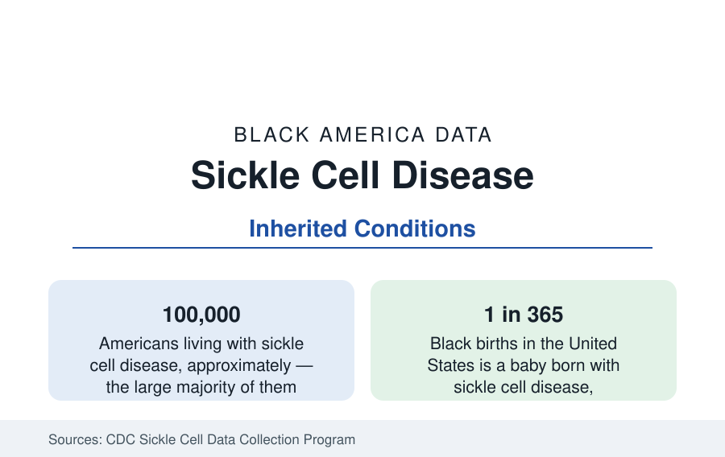

Black Public Health
Sickle Cell Disease: The Most Common Inherited Blood Disorder in Black America
About 100,000 Americans live with sickle cell disease — overwhelmingly Black, at roughly 1 in every 365 Black births. The CDC data profile.

Sickle cell disease affects about 100,000 people in the United States — the large majority of them Black — making it the most common inherited blood disorder in Black America. About 1 in every 365 Black babies is born with the disease, and about 1 in 13 Black Americans carries the sickle cell trait. It is present in every dataset in this section yet structured unlike any of them: a single-gene condition, identifiable at birth by universal newborn screening, whose outcomes are determined less by biology alone than by the care system built — or not built — around it. This article reports the data.
The Condition and Its Course
Sickle cell disease is a group of inherited red-blood-cell disorders in which hemoglobin polymerizes under low oxygen, deforming cells into the sickle shape that gives the condition its name. The deformed cells die early (producing chronic anemia) and obstruct small blood vessels (producing the disease's signature vaso-occlusive pain episodes, organ damage accumulating across the lifespan, and elevated stroke risk beginning in childhood). Severity varies by genotype — the SS form is most severe, SC and the thalassemia combinations milder on average — a distribution the clinical data stratify. The trait (one copy of the gene) is generally benign, carried by roughly 3 million Black Americans, and is the population-genetics background the newborn-screening data measure directly.
Outcomes: The Survival Transformation and Its Unevenness
The survival record is public health's two-sided exhibit. Within living memory, sickle cell disease was substantially a childhood mortality condition in the United States; newborn screening, penicillin prophylaxis, vaccination, and transcranial Doppler stroke screening transformed it — median survival now extends into the fifties and beyond in the cohort data, and the large majority of affected children reach adulthood. The transformation is unevenly distributed in the data: adult care is the system's thin layer (few comprehensive adult sickle cell centers exist relative to the pediatric network), emergency-department care for pain episodes is the documented friction point of the patient-experience literature, and life expectancy for adults with the disease still trails the general Black population's by roughly two decades — the gap that the gene-therapy era's new curative options (approved in the current generation of treatments) now addresses at costs and access levels the health-services data are beginning to track.
Geography and the Care Map
The patient population maps onto Black America's map — the Southeast and the industrial Midwest and Northeast hold the largest populations, tracked state by state under the CDC's Sickle Cell Data Collection program, which assembles the all-payer claims picture in its participating states. The care map does not match the patient map with equal fidelity: comprehensive sickle cell centers cluster in the academic metros, while large patient populations in the Delta, the Black Belt, and the smaller industrial cities are served by general hematology or by no subspecialist at all — the access pattern the program's data exist to document. Hydroxyurea, the disease-modifying therapy established for decades, remains underprescribed relative to its guideline population in the claims data — the single most quantified care gap in the literature.
Research Funding in Comparative Data
The comparative-funding analyses are the literature's most cited equity exhibit: federal research funding per affected person for sickle cell disease has run at a fraction — in the commonly cited comparisons, roughly a third or less — of the per-person funding for cystic fibrosis, a condition affecting fewer Americans (about 40,000), predominantly white, with comparable severity. Philanthropic funding shows a wider multiple in the same direction. The analyses are quoted here as the literature presents them — as allocation data, not motive findings — and the recent period's data show the gap narrowing as dedicated sickle cell programs and the curative-therapy investments have grown.
Reading the Sickle Cell Data
Sickle cell is the public health section's clearest case where the condition is fully measured and the shortfall is in the delivery system: universal screening finds every case at birth, effective therapies exist, and the outcomes stratify by the comprehensiveness of the care around the patient. The numbers — 100,000 people, 1 in 365 births, a survival curve transformed and unfinished — describe a solved diagnosis inside an unsolved system.
More in Black Public Health
Hypertension Among Black Adults: Prevalence, Control, and Consequences
About 55 percent of Black adults have hypertension — the highest rate of any U.S. group. Prevalence, onset, control, and the stroke, heart, and kidney consequences in the data.
Diabetes Among Black Adults: Prevalence and Complications
Nearly one in five Black adults has diabetes, diagnosed or undiagnosed — and its complications fall with particular weight. The CDC data on prevalence, control, and outcomes.
Black Life Expectancy: The Gap at Birth and Its Causes
Black life expectancy at birth is about 73 years, roughly five years below the national figure — the summary measure of every health gap in this section. The CDC data.
Source: Centers for Disease Control and Prevention, Sickle Cell Data Collection program; National Heart, Lung, and Blood Institute; CDC newborn screening data.